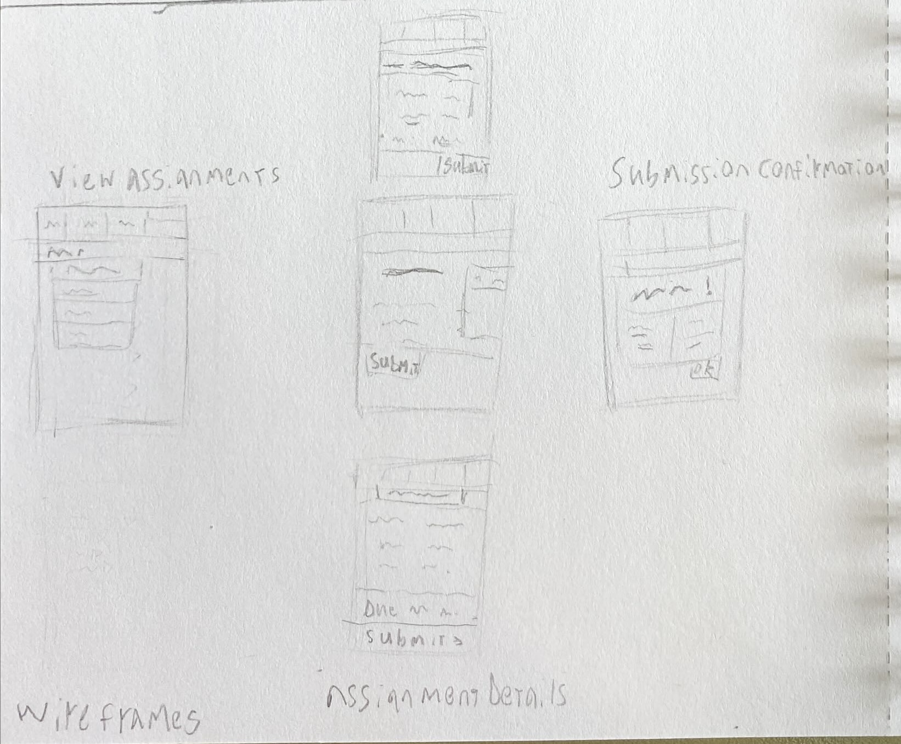

Task
For my task I have chosen to make an assignment submission page. In the homepage, the user can view their upcoming assignments, and after clicking on one of them, it displays information about the screen, including any details on the assignment, the due date, and an option to submit your assignment. Assignments are submitted by uploading a file to the website, which will display a success screen once done.
User Flow


There are 3 designs made for the second screen, the assignment details. I believe the one in the middle would be the most successful, as it's grouped together in a more coherent way that makes things both seem more connected and feel less overwhelming than a large page of text like the third one. Perhaps it would be better if the submit button would be on the right side so it's in line with the rectangle that will have the due date in it.
Reviewed by Rin Larkin